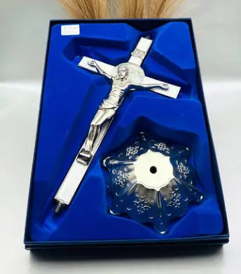
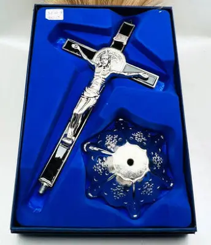
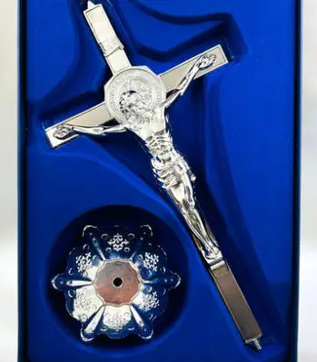
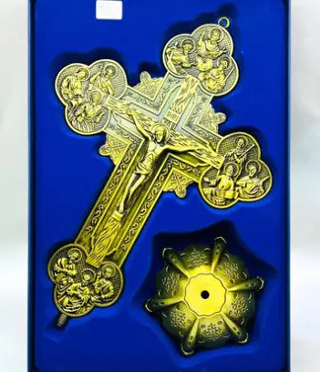
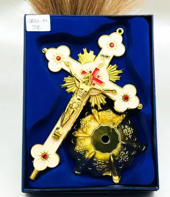
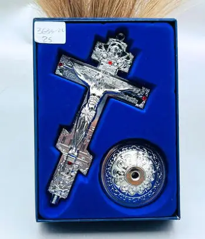
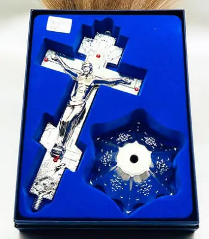

Religiosos
Crucifijos Zamak · Ref. 3633-01
Pieza del catálogo Crucifijos Zamak. Medida aprox. 18X9 CM. Referencia 3633-01.
Colección tomada del catálogo «catalogo crucifijos zamak nuevos.pdf».
Pieza del catálogo Crucifijos Zamak. Medida aprox. 18X9 CM. Referencia 3633-01.
Pieza del catálogo Crucifijos Zamak. Medida aprox. 18X9 CM. Referencia 3633-02.
Pieza del catálogo Crucifijos Zamak. Medida aprox. 20X9.7 CM. Referencia 3633-03.
Pieza del catálogo Crucifijos Zamak. Medida aprox. 20X9.7 CM. Referencia 3633-04.
Pieza del catálogo Crucifijos Zamak. Referencia 3633-05.
Pieza del catálogo Crucifijos Zamak. Medida aprox. 23.7X12.4 CM. Referencia 3633-06.

Pieza del catálogo Crucifijos Zamak. Medida aprox. 23.6X12.3 CM. Referencia 3633-07.
Pieza del catálogo Crucifijos Zamak. Medida aprox. 23.6X12.3 CM. Referencia 3633-08.

Pieza del catálogo Crucifijos Zamak. Medida aprox. 23.6X12.3CM. Referencia 3633-09.

Pieza del catálogo Crucifijos Zamak. Medida aprox. 31.3X15.15 CM. Referencia 3633-10.
Pieza del catálogo Crucifijos Zamak. Medida aprox. 29.4X14.11CM. Referencia 3633-11.
Pieza del catálogo Crucifijos Zamak. Medida aprox. 29.4X14.11CM. Referencia 3633-12.
Pieza del catálogo Crucifijos Zamak. Medida aprox. 29.4X14.11 CM. Referencia 3633-13.
Pieza del catálogo Crucifijos Zamak. Medida aprox. 19.11X3.8 CM. Referencia 3633-14.
Pieza del catálogo Crucifijos Zamak. Medida aprox. 14X9.7 CM. Referencia 3633-15.
Pieza del catálogo Crucifijos Zamak. Medida aprox. 18.12X12.17 CM. Referencia 3633-16.
Pieza del catálogo Crucifijos Zamak. Medida aprox. 24.6X16.8 CM. Referencia 3633-17.

Pieza del catálogo Crucifijos Zamak. Medida aprox. 29.10X20.5 CM. Referencia 3633-18.

Pieza del catálogo Crucifijos Zamak. Medida aprox. 16X19.10 CM. Referencia 3633-19.
Pieza del catálogo Crucifijos Zamak. Medida aprox. 19.10X13.7 CM. Referencia 3633-20.
Pieza del catálogo Crucifijos Zamak.
Pieza del catálogo Crucifijos Zamak. Medida aprox. 27.12X18.13 CM. Referencia 3633-21.

Pieza del catálogo Crucifijos Zamak. Medida aprox. 13X6.17 CM. Referencia 3633-22.

Pieza del catálogo Crucifijos Zamak. Medida aprox. 17.6X9 CM. Referencia 3633-23.